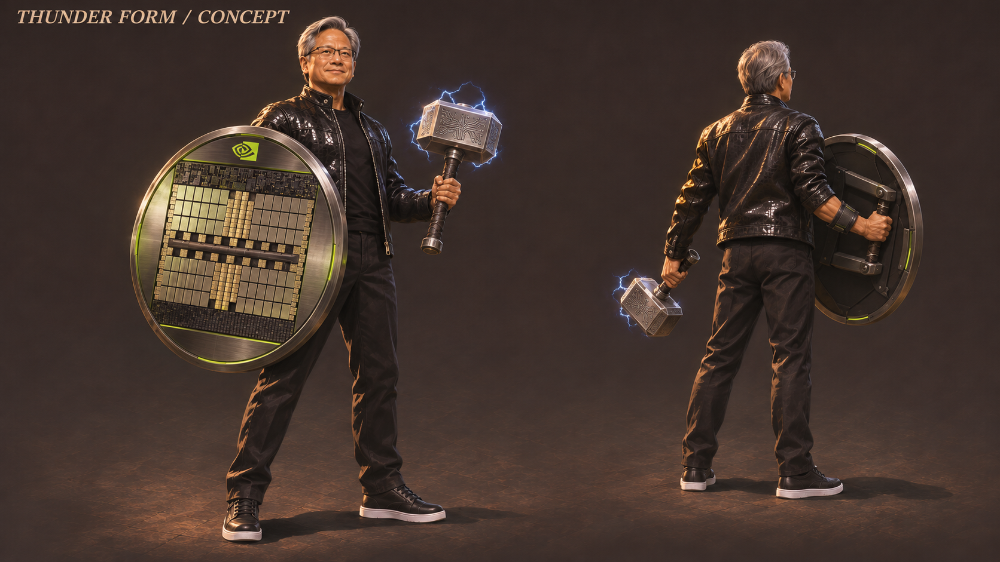

每次的小电弧
普通有效近战命中的短电弧，是贴在接触点的反馈，不额外造成雷电伤害，也不会替玩家蓄势。
JENSEN / EVOLUTION & THUNDER
每次进化都改变手里的东西，也改变靠近、出手和离开的方式。新的形态要有时间享受，终态还要有两场正式战斗可以发挥。
成长与技能候选 · 尚未实装或实玩当前只有一张新终态造型研究图，五阶段动作美术尚未完成。独立文字复核有条件支持展示，关键合同与实际体验仍待验证。
主要造型与能力在一轮八战内获得、少量分支供重新开局尝试，仍是待用户澄清的工作假设；没有制作永久XP、局外货币或装备背包经济。
五阶段候选 · 首次可用战次：1、2、3、5、7
短拳与肩推，侧让冲撞后贴近打一段再退出。
左手托盘从单点扩为近身扫群，右手空着保持平衡。
角色右手握大圆盾，主动接一拍、盾面推进打开局部缺口。
右盾左钢锤，重击时盾放低、不同时架防，先享受真实重量。
角色右手英伟达大圆盾、左手雷神锤；手动兑现三格雷电，正式体验两战。
这些是玩法与造型的候选提案，不代表五张阶段图或五套动作已经制作。阶段时长、近战收益和可安全退出的路线仍需实玩。
第3、5、7战后保留当前形态，不硬塞新升级
盾兵不能瞬间追着器具转盾；盾击需真正打开可通过的缺口，正面普通攻击也不是完全无效。
内容分配起测预算：85秒，包含正常短卡与结算；不是计时胜利。
查看既有对手设计 →重拳锁向后留出侧面下锤与退出的机会；大拳不是盾可挡类别。
内容分配起测预算：95秒，包含正常短卡与结算；不是计时胜利。
查看既有对手设计 →交替枪线要提供反复进入、短打、退出的错拍，不能只是第2战更密的复制。
内容分配起测预算：95秒，包含正常短卡与结算；不是计时胜利。
查看既有对手设计 →十人全部在场、独立承伤；同时危险序列的首测限制必须计入已释放的残留危险。
内容分配起测预算：130秒，包含正常短卡与结算；不是计时胜利。
查看既有对手设计 →八战规划合计720秒，终态第7–8战合计225秒；这只是内容分配假设，不能靠等怪、强制阅读或加血凑时长。十席必须全部完成正式结算；到时间、到分数、雷电次数或第一人倒下均不算胜利。
一张新造型研究图 · 正面与背面

大圆网格盾、现代黑皮衣、单手锤和正背持物方向可读。背面能看到右手握盾柄、左手握锤；正面右手被盾遮住，不能只凭这一视角认证完整握持连接。两视图盾的投影大小不同，三维尺寸是否一致仍未核对。
图中没有动作阶段或敌人，不能证明盾锤协同、左手发力路线、敌招可读性、雷电伤害或手感。镜头、支撑、动画与运行素材都未标定。绿色眼形标记属于新画的设计元素，不是对真实道具结构的核证。
候选规则 · 所有数值均为首测假设
普通有效近战命中的短电弧，是贴在接触点的反馈，不额外造成雷电伤害，也不会替玩家蓄势。
一次实际造成正实体伤害的攻击，最多积一格；扫中多人也不是每人一格。满三格可保留，由玩家主动重击消费；空挥不能对远处凭空放出伤害雷电。
按住重复，由拳、托盘、盾沿和锤头随阶段承担。每次都要真实接触，不自动接重击。
点按短推，第3战起变成右手盾面推进。短暂挡住一拍，不是持续举盾自动保命。
第5战起加入第四项主动作。终态蓄满后由同一动作兑现雷电；挥锤期间盾没有主动格挡。
负责进场和退出，不自动攻击。具体距离、冷却与无敌时段尚未绑定为可试玩规则。
强化雷电的最终命中资格、盾挡伤幅度／同刻命中处理，以及短缓存细节仍待合同收口；当前不能据此直接实现或声称完全挡伤。
这些都是首测候选，不是已接入游戏的按键表或平衡结论。
草案把稳定取得的五阶段作为主线，再给雷电一个可选取舍。独立复核有条件支持候选展示，六项意见如下；逐项回应与后续判据一并保留。图好看不会使合同和体验风险自动解决。
候选默认取向。从近战主目标向邻敌依次连锁，最多两次次目标跳跃，每跳最多2个主角碰撞直径；每段和每个受击者到起点都须无遮挡。
能照顾侧后方相邻目标，但接不上超过合法跳距的孤立后排。
由真实近战起点沿重击锁定方向，取长4个、宽1个主角碰撞直径通道内最前两名次目标；墙会截断通道。
可跨过空隙打纵列，但漏掉方向之外的侧面包围。实际碰撞尺度尚未绑定。
候选提出新局前可选一次，无解锁或货币需求；开局选择界面与是否更早分化仍待定，当前不强制弹窗。提案中途中不换，不改变终态持物。两种末期雷电取向都从第7战才生效，伤害上限相同不代表用途平衡；它们暂不等于整局重玩构筑已经成立。
基础攻击开始后0.20秒请求换位，120毫秒缓存到0.32秒过期；若攻击要到0.48秒才结束，按住攻击又可能起下一击。能否立即取消、唯一缓存如何覆盖、同时就绪如何排先后，当前没有唯一答案。
采纳为实施前缺口，不从R3偷继承，也不由实现者猜。
明确Strike→Step、缓存覆盖/过期、缓存与Hold同刻顺序及续扫；检查.20退出、冷却边缘、同时请求、松开/失焦。
合同未定
最多挡一击并未说明全抵消还是减伤，同刻两包伤害也未定序。盾在0.28–0.36秒接触，推进到0.66秒结束后才接锤，最早锤接触约0.98秒；相隔0.62–0.70秒，敌人可能早已恢复或补位。
采纳；抵消倍率/同刻选包未明，盾接触后约.62–.70秒才最早下锤，不保证安全连段。
明确挡伤与消费规则，再测真实净宽和既有敌人补位/收势；不补永久盾。
合同未定＋协同待测
积格要求正实体伤害，强化释放却只写合法实体接触。先碰到零伤目标A，再碰到可受伤目标B，究竟从A传导、等B作起点还是不放雷，尚未明确。
采纳为未定；倾向首个正实体扣血接触作种子的最小建议，但不改原规则冒称已采纳。
列0伤A→正伤B、正伤A当场死亡、同刻多部件的唯一预期；保留死种子从确认点续传且不双发击败。
合同未定
若三次按住攻击后立即重击总是最优，保留蓄势只损失输出；若总保留满格，普通命中又可能长期没有积累收益。也可能借安全前排作起点长期清后排，让走位与目标选择失去价值。
采纳；确定性不等于有策略，合法近战清后排可以成立，但不能让走位全面无用。
战7/8比较立即解近压和保留覆盖侧群/后排两种真实收益，及低移动循环/主动进退/旧远投参考。
玩法待验证
开局选分支，却到第7战才生效；前六战规划共495秒相同，仅最后225秒不同。第3战的盾后投手还没遇到分支，不能拿来证明纵列分支有用；等伤害上限也不能证明平衡。
降级为终态雷电取向；前6战495秒相同，战3盾后投手不能证明Line正式收益。
在实际战7/8找Line纵列与Fork侧群的独有收益；开局选择UI与更早分化待定，不新增永久XP。
有限末期分支，非完整重玩构筑
敌人可能很快被早几次爆发清完，也可能难以近身，让预算变成等待。钢锤与雷神锤若只靠常亮电光区分，进化可能像换特效；强光又会挡地热和十席预警。
采纳；225秒仅预算，S04/S05不得只靠常亮电粒子区分。
检查数次完整积累/选择/接触/传导/退出；无电并排审轮廓、实际声画/敌招；不足先改内容窗口。
体验与表现待验证
T1／T2／T3仍是实施前未定合同；T4／T6须实玩与动作验证；T5仅是末期雷电取向。没有一项因文字复核或静态图而被认定为运行已解决。
餐厅劳动、共同创业、伙伴、平台与研究成果提供人物和时代背景，不证明相应招式真实存在。三位创始人、Sega、ST／TSMC、CUDA开发者、AlexNet作者与系统合作贡献不变成主角一个人的超能力史，也不成为击败敌人获得的战利品。
大圆芯片盾与召锤姿态有报道背景，但这里不声称核实过原视频时间码或音轨。锤成功抵达左手、雷电和全部战斗属于明确幻想。所示图是新生成的造型研究，不是历史影像或获批肖像。
现有报道材料支持晶圆盾及作势召锤未果的背景。
原视频、准确时间码、语气及音轨未核；成功召锤和战斗是幻想。
现有报道材料支持现场作势召锤的背景。
不把页面导航当作完整正文证据，也不声称已独立观看原视频。
参考主动攻击与防御收益相联系的玩法关系。
不照搬概率格挡、资源或数值。
参考首目标带动邻近连锁的玩法关系。
不照搬距离、控制或资源。
参考同一招式获得电弧变体的玩法关系。
本案仍是手持近战，不复制环绕飞锤。
沿用本次提供的来源核查记录；本页没有重新核验视频，也不把玩法类比当作本作的平衡证据。